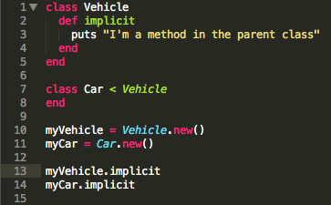
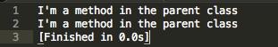
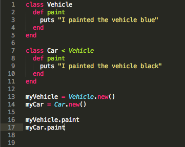
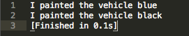
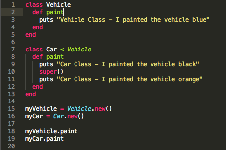
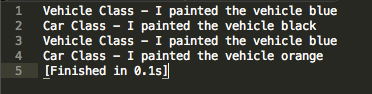
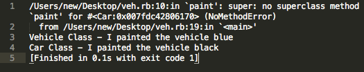
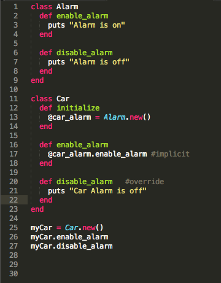
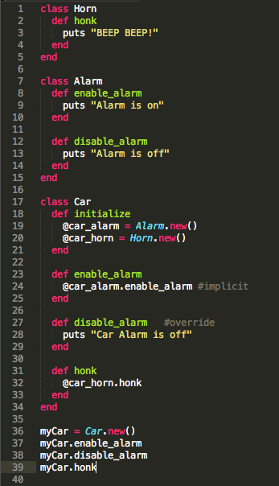
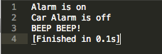

May
Week 6 Technical Blog - Inheritance vs Composition
This week I decided to tackle the difference between Inheritance vs Composition. Though I have not as of today had much experience inheriting a parent class or include the functionality of a class into my subclass. I hope explaining the difference will help solidify my understanding. If I made any mistakes along the way, don't hesistate to let me know. Lets start by breaking up each piece.
What is Inheritance?
The explanation to inheritance is pretty straight forward. Any class that you create using inheritance will inherit the features of its parent class. When you say class Car < Vehicle, the Car class is inheriting features from the Vehicle class. If the Vehicle class had methods to start and stop the vehicle, your Car class now has the capability to start and stop your Car. Inheritance is also known as a "is a" relationship.
When working with inheritance, the parent and child class can interact with each other in three ways.
- Actions on the child imply an action on the parent.
- Actions on the child override the action on the parent.
- Actions on the child alter the action on the parent.
If we have the following example.
The child class Car will inherit the methods of the parent class and you'll see in the following output that calling the implicit method from the myCar instance will still work even though there is no methods defined in Car.
If we have the following example.
The child class Car and the Vehicle class both have the same method name. Even though Car inherited the paint method from the Vehicle class, Car's own paint method overrides the Vehicle class paint method. Here's the results.
If we have the following example.
The child class Car still inherits the paint method from the parent class Vehicle. But inside the child class, we override the paint method but also call the parent class in between by using the super() funtion. The super() function allows the child to call the superclass (parent class).
Results below.
An additional sidenote on inheritance. If you try to call super(), and there is no overridden parent method, then you will get an error such as the following 
Lastly, Ruby does not support multiple inheritance. A class can only inherit from a single other class.
What is Composition?
Composition is a way to combine simple objects or data types into more complex ones. Unlike Inheritance which has a "is a" relationship such as if a Car "is a" Vehicle which is more restrictive. Composition takes a "has a" approach such as if a Car "has a" engine.
Lets try an example. Say we had a class called Cars and we needed to add an alarm system to it. We can use inheritance to pass the objects in the Alarm class to the Car class, but why keep the two classes so tightly coupled. Instead of using inheritance to give the Car class the ability to use the Alarm class. You can simply create an instance of the Alarm class within the Car class.
Here's the result
Doing it this way allows you to use the available methods from the Alarm class. You can still have behaviors that mimic inheritance such as implicit calls to a method and overriding. Plus you can also add in additional methods from other class. An example would be if you wanted to add a Horn to the Car class, you can create a new instance of the Horn class within the Car class to allow your car to honk now. Since composition uses a "has a" relationship, the Car has a horn, the Car has an alarm, this allows a lot of flexibility in your code to add and remove parts.
Example below.
What the results look like
From my research, it seems that the recommend method to go with is Composition. Its not very often that you are going to build a class that is a child of the parent, but it is very likely you'll build a class that has pieces from many other classes.
In the book Learn Ruby the Hard Way, their recommendations are as follows.
- Use composition to package up code into modules that is used in many different unrelated places and situations.
- Use inheritance only when there are clearly related reusable pieces of code that fit under a single common concept, or if you have to because of something you're using.
Resources
Wikipedia - Object compositionLearn Ruby the Hard Way - Exercise 44
Composition vs Inheritance by Daniel Cooper
How Does One Use Design Patterns in Ruby? by Chee Yeo